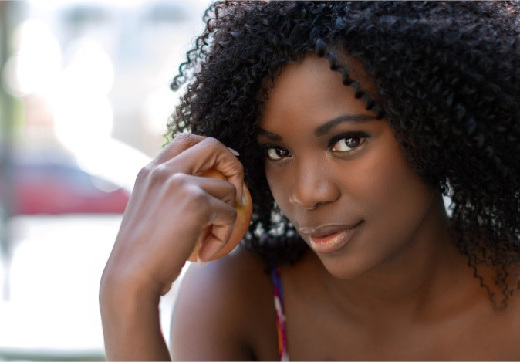

 Kontakta oss Freya, grundaren av Freya Photos, har alltid haft en passion för fotografering och bildskapande. Hennes resa inom fotografins värld började tidigt och har varit fylld av både akademiska och praktiska erfarenheter som har format henne till den skickliga fotograf hon är idag. Utbildning och bakgrund Freya studerade vid den prestigefyllda Kungliga Konsthögskolan, där hon tog en kandidatexamen i fotografi. Under sin tid på konsthögskolan fick hon inte bara teknisk kunskap om fotografering utan också en djup förståelse för konstnärliga uttryck och komposition. Hon fick möjlighet att arbeta med några av de mest respekterade namnen inom konstvärlden, vilket ytterligare inspirerade och formade hennes stil och tekniker. Efter examen fortsatte Freya sin utbildning genom att delta i olika workshops och kurser, både nationellt och internationellt. Hon reste till Paris för att delta i en avancerad kurs i porträttfotografering, och hon besökte även New York för att studera under en välkänd modefotograf. Dessa erfarenheter gav henne ett brett perspektiv och en mångfaldig portfölj som sträcker sig över olika genrer och stilar. Kontaktuppgifter: Epost : Freyaphotos@epost.se Telefon: 08-080 08 08